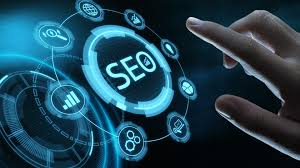

Introduction to SEO Services
SEO (Search Engine Optimization) is the practice of optimizing websites and content to rank higher in search engine results, increasing organic (non-paid) traffic. Our SEO services aim to help your business grow by enhancing your online visibility, attracting more customers, and ultimately increasing revenue.

SEO Services We Offer
- Keyword Research: Identifying the best keywords to target for your business niche.
- On-Page SEO: Optimizing individual web pages, including content, meta tags, images, and internal linking.
- Technical SEO: Ensuring your website's technical infrastructure is search-engine-friendly (e.g., improving site speed, mobile optimization, crawlability).
- Link Building: Gaining high-quality backlinks from authoritative websites to improve domain authority.
- Content Creation: Writing high-quality, optimized content that adds value and drives organic traffic.
- Local SEO: Optimizing your online presence to appear in local search results and on Google Maps.
- SEO Audits: Performing comprehensive website audits to identify SEO issues and opportunities for improvement.

Why SEO is Important for Your Business
- Increase Website Traffic: Higher rankings in search engines lead to more visibility and more traffic to your website.
- Build Credibility and Trust: Appearing at the top of search results signals trustworthiness and authority to potential customers.
- Cost-Effective Marketing: SEO is one of the most cost-effective marketing strategies, offering long-term benefits without ongoing ad spend.
- Improve User Experience: SEO best practices improve site usability, leading to better user experience and higher conversion rates.
- Stay Ahead of Competitors: Investing in SEO helps you stay ahead of competitors who may be ranking higher in search results.
SEO Tools We Use
- Google Analytics: For tracking website traffic and user behavior.
- Google Search Console: For monitoring and optimizing your website’s presence in Google search results.
- SEMrush: For comprehensive SEO audits, keyword tracking, and competitor analysis.
- Ahrefs: For backlink analysis, keyword research, and SEO health checks.
- Moz: For keyword tracking, on-page optimization, and link-building opportunities.
Resources for Learning SEO
Here are some resources to help you learn SEO and improve your skills:
Get Started with SEO Today!